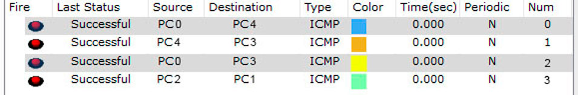
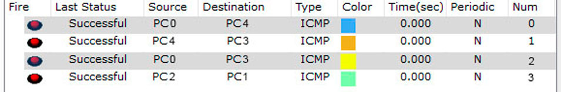

Список лабараторных работ:
Лабораторная работа 1

Цель:
Создать простейшую html страницу.
Задачи:
- Научится создавть простейшую html страницу.
- Сделать html страницу в виде отчета по лабораторным работам.
- Залить получившуюся страницу на github.
Ход работы:
- Научился создавать простейшую html страницу.
- Познакомился с простейшими тегами такими как head,body,h1,h2,ol,div и т.д..
- Зарегистрировался на github.
- Залил свою страницу на github.
Вывод:
В ходе проделанной работы, я научился создавать простейшие html страницы и заливать их на github.
Лабораторная работа 2

Цель:
Сделать простейшее веб-приложение.
Задачи:
- Разбится на группы из 4 человек.
- Решить какое приложение будет создано.
- Распределить роли.
- Создать приложение.
Ход работы:
- Разбились на группы по 4 человека.
- Определились с выбором веб-приложения.
- Распределили роли, каждый разобрался в поставленное ему задаче.
- Было создано веб-приложение.
Вывод:
В ходе проделанной работы научились создавать простейшее веб-приложение работая в команде.
Лабораторная работа 3
Настройка коммутаторов и маршрутизаторов.
Расчет диапазонов подсетей.
ШАГ 1: Разместить на рабочем поле коммутатор и два компьютера и соединить их

ШАГ 2: Добавить на рабочее поле еще один коммутатор с двумя компьютерами и настроить адресацию из другой подсети

ШАГ 3: Соединить коммутаторы между собой и проверить работоспособность сети (Не работает, так как коммутаторы подсоединяются только к маршрутизаторам)

ШАГ 4: Добавить маршрутизатор на рабочее поле

ШАГ 5: Добавить на рабочее поле еще один маршрутизатор. Подключить к нему коммутатор и компьютер

Настройка статической маршрутизации производится при помощи команды: ip route [сеть назначения] [маска] [маршрут]
Установить банер на сетевое оборудование: banner motd [баннер]

Пакеты успешно отправляются!
Вариант 5
Расчет диапазонов подсетей.
| - | Lan A | Lan B | Lan C |
|---|---|---|---|
| Кол-во узлов | 35 | 120 | 512 |
| Subnet | 192.168.5.0 | 172.16.5.0 | 10.10.5.0 |
| Mask | 255.255.255.192 | 255.255.255.128 | 255.255.252.0 |
| Broadcast | 192.168.5.63 | 172.16.5.127 | 10.10.8.255 |
ШАГ 2: Добавить на рабочее поле еще один коммутатор с двумя компьютерами и настроить адресацию из другой подсети
ШАГ 3: Соединить коммутаторы между собой и проверить работоспособность сети (Не работает, так как коммутаторы подсоединяются только к маршрутизаторам)
ШАГ 4: Добавить маршрутизатор на рабочее поле
ШАГ 5: Добавить на рабочее поле еще один маршрутизатор. Подключить к нему коммутатор и компьютер
| Устройство | IP - адрес | Маска | Шлюз |
|---|---|---|---|
| PC0 | 192.168.5.62 | 255.255.255.192 | 192.168.5.1 |
| PC1 | 192.168.5.61 | 255.255.255.192 | 192.168.5.1 |
| PC2 | 172.16.5.126 | 255.255.255.128 | 172.16.5.1 |
| PC3 | 172.16.5.125 | 255.255.255.128 | 172.16.5.1 |
| PC4 | 10.10.8.254 | 255.255.252.0 | 10.10.5.1 |
| R0 0/0 | 192.168.5.1 | 255.255.255.192 | - |
| R0 0/1 | 172.16.5.1 | 255.255.255.128 | - |
| R0 0/2 | 15.15.5.2 | 255.255.255.252 | - |
| R1 0/1 | 10.10.5.1 | 255.255.252.0 | - |
| R1 0/2 | 15.15.5.1 | 255.255.255.252 | - |
Установить банер на сетевое оборудование: banner motd [баннер]
Проверка работоспособности сети:

Вопросы к экзамену
- Способы общения клента и сервера?
- 1) SOAP Ссылка на вики
- 2) REST Ссылка на вики